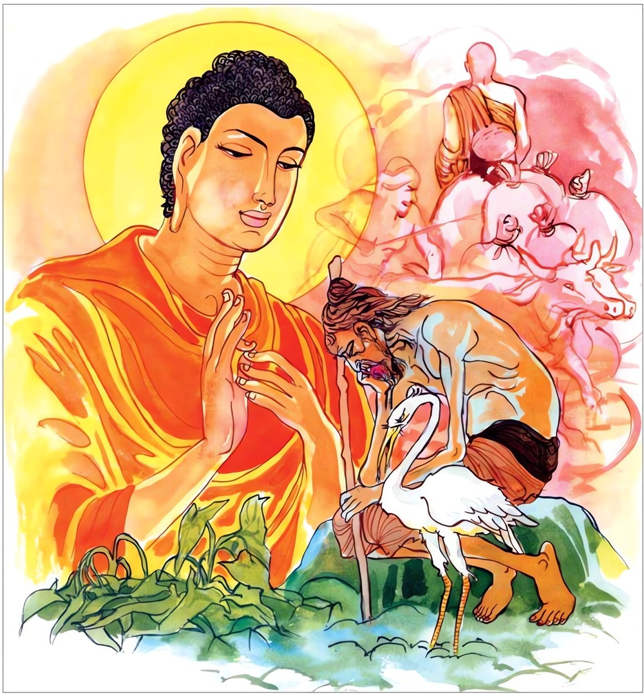
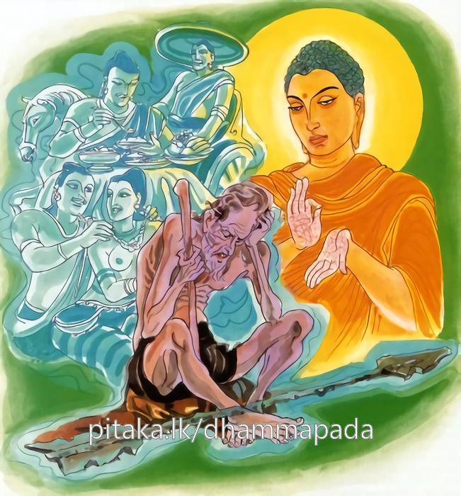

11-9 මහධන සිටුපුතුගේ කථා පුවත
මෙම කතාව සද්ධර්ම සාගරයෙන් ද කියවන්න.
අචරිත්වා බ්රහ්මචරියං අලද්ධා යොබ්බනෙ ධනං
ජිණ්ණකොඤ්චාව ඣායන්ති ඛීණමච්ඡෙව පල්ලලෙ.
(පැවිද්දට යෝග්ය වූ තරුණ වයස පැවිදි වැ ගෙණ) බඹසරවස් නො වැස, (නූපන් භොග උපදවන්නට ද උපන් භොග රක්නට ද යෝග්ය වූ) යෞවන වයසෙහි (කෘෂි වණික්කර්මාදියෙන් ලැබිය හැකි වූ) ධනය ලැබ නොගෙන, පමා වැ වුසූ අඥානයෝ දිය සුන් හෙයින් මසුන් නැති විලෙක මඬ පිට හිඳ තැවෙන, (ගොදුරු ඇති විලකට නැගී යන්නට බල නැති පත් වගුළ) මහලු කොස්ලිහිණියන් මෙන් තැවෙන්නාහ.

අචරිත්වා බ්රහ්මචරියං අලද්ධා යොබ්බනෙ ධනං
සෙන්ති චාපා’තිඛිත්තා’ව පුරාණානි අනුත්ථුනං.
තරුණ වයසෙහි බඹසරවස් නොවැස, යොවුන් වයසෙහි ධනය නොසපයා, පමා වැ වුසූ අනුවණයෝ හරණ ලද සැර මෙන් (හෙවත් දුන්නෙන් විදිනා ලදු ව වළැ හුනු සැර හුනු තැන ම තිබී දිරා නස්නා මෙන්) (පෙරැ මෙසේ කෑම්හ, මෙසේ පූම්හ යන ආදීන්) පෙර වුන් සුව සැපතට සොස්මින් හොවිත්.

"අචරිත්වා" යන මේ ධර්ම දේශනය ශාස්තෲන් වහන්සේ ඉසිපතනාරාමයේ වැඩ සිටිය දී මහාධන සිටුතුමා අරමුණු කරගෙන දේශනා කළහ.
මහධන සිටුපුත් තෙම බරණැස අසූකෙළක් ධනය ඇති කුලයක උපන්නේ ය. ඔහුගේ දෙමාපියෝ මේ ලෙස සිතූහ. අපගේ කුලයේ මහාභෝග සමුහය පරිභෝග කරණු මිස අනෙක් කටයුත්තකින් ප්රයෝජනයක් නැත. එනිසා මේ සිටු පුතුට ගීත වාදනය පමණක්ම ඉගැන්වුහ. දෙමාපියන් මහළු වයසට පත්වන විට පුතුට ආවාහයක්ද කරදෙන ලදී. අනතුරුව ටික කලකින් දෙමාපියෝ කළුරිය කළහ.
අසූ දෙකෝටියක් ධනය තිබුන එම නගරයේ කුල දුවක් ඇතිවිය. ඇගේද දෙමාපියෝ එලෙසම සිතා නැටුම් ගැයුම් පමණක්ම ඉගැන්වුහ. ඔවුන් දෙදෙන වැඩිවියට පත්වුවිට විවාහ වූහ. අනතුරුව එම දෙමාපියන්ද පරලොව ගියහ. දෙ අසූ කෝටියක් වු ධනය එකම ගෙයි තැබුනි. සිටුපුත් තෙම දිනකට තෙවරක් රාජ සේවය සඳහා යයි.
මේ අතර නගරයේ ධූර්තයෝ - මේ සිටුපුත් සුරාලෝලී කෙනෙක් වන්නේ නම් අපට පහසු වන්නේය. ඔහුට සුරාලෝලි බව ඇතිකරනෙමුයි ඔවුන් සුරාගෙන බදින ලද මස්ද ලුණු හා හකුරු ද දසරුවේ බැඳගෙන අලයක් (පුලුස්සා) ගෙන එම රාජ කුලයෙන් ආපසු එමින් සිටින මග රැක බලාසිට සිටුකුමරුට රා පොවා ලුණු හා හකුරු කටට දමා පුලුස්සන ලද අලය සපා සිටුපුත්රය සියවසක් ජීවත් වන්නැයි සිටුපුත්රය ඔබ නිසා අපට කෑමට බීම ලැබෙන්නේ යයි කීවාහුය. හේ ඔවුන්ගේ වදන් අසා පසුපස එන්නා වූ සුළු සේවකයාගෙන් විමසුවේය. මේවා බොන්නද? ඔහු ස්වාමීනි. එක්වරක් බොන්න. සුරා ඉතා ප්රියමනාපය. ස්වාමිනි. මෙලොව මේ හා සමවූ පානය කළ යුතු වෙන දෙයක් නැත. ඔහු ද මම ද පානය කිරීම වටී යයි කියමින් ටික ටික ගෙන්වාගෙන බොයි. අනතුරුව නොබෝ කලකින් එම සුරාධූර්තයෝ බොන බව දැන ඔහු පිරිවරා ගත්හ. කල්ගතවන විට පිරිවර බොහෝ විය. ඔහු සියයකින් ද කහවණු දහසකින් ද සුරා ගෙන්වාගෙන බොන්නේ පිළිවෙලින් හුන්තැන කහවණු ගොඩගසා රාබොමින් මේ මල් ගෙන එන්න මේ සුවඳ දැ ගෙන්වන්න.
මේ ජනයා සූදුවෙහි දක්ෂය මේ ජනයා නැටීමේ දක්ෂයෙකි මේ තැනැත්තා ගීතයෙහි වාදනයෙහි දක්ෂය මොහුට දහසක් දෙන්න. මොහුට දෙදහසක් දෙන්න. මේ ලෙසින් වියදම් කරන්නේ නොබෝ දිනකින්ම තමා සතු අසූකෙළක් ධනය වැය කොට ස්වාමීනි ධනය අවසන් වී යයි පැවසූ විට ඇයි මගේ බිරිඳ සතු ධනය නැත්දැයි විමසා ඇති බව පැවසු විට ඒවාද ගෙන්වා ගෙන ඒවාද එලෙසම වැය කොට පිළිවෙළින් ආරාම උයන් වතු සියල්ල විකුණා පිළිවෙළින් භාජන පොරෝණ හා ඇඳ පුටු පවා විකුණා සුරාවට වැය කළේය. අන්තිමට තම නිවස පවා විකුණා දමා පාරට බසින්නට සිදුවිය. හේ බිරිඳ සමග අන් අයගේ ගෙවල්වල අගපිල්වල වාසය කරමින් මැටි කබලක් ගෙන පිඬු පිණිස හැසිරි ඉඳුල් බත් කන්නට විය. එක් දිනක් ආපන ශාලාවේ දොරටුව සිට කුඩා සාමණේර හිමිවරු විසින් දෙන ඉඳුල් බත් පිළිගන්නා අයුරු දැක බුදුන් වහන්සේ සිනා පහළ කළහ. එය දුටු ආනන්ද තෙරුන් සිනා පහළ කිරිමට හේතු විමසුහ. එයට හේතු දැක්වු බුදුරජාණන් වහන්සේ ආනන්ද බලන්න මේ මහධන සිටුපුත් තෙම මෙ නගරයේම දෙඅසූකෙළක් ධනය විනාශකර භාර්යාවත් සමග අනුන්ගෙන් සිඟා කන අයුරු
ඉදින් මේ තැනැත්තා පළමු වයසේ දී සම්පත් විනාශකර නොගෙන කර්මාන්තයෙහි යෙදවූයේ නම් මොහුට අග සිටුවරයා වන්නට තිබුනි. ඉදින් ගිහිගෙහි නික්ම පැවිදි වූයේ නම් අර්හත් වන්නට තිබුනි. ඔහුගේ බිරිය ද අනාගාමී වන්නට තිබුනි. ඉදින් මධ්යම වයසේ දී භෝග සම්පත් විනාශ නොකර කර්මාන්තයෙහි යෙදෙව්වේ නම් දෙවැනි සිටුවරයා වන්නට තිබුනි. ගිහිගෙයින් නික්ම පැවිදි වුයේ නම් අනාගාමී වන්නට තිබුනි. භාර්යාවටද සකෘදාගාමි ඵලයට පත්වන්නට තිබුනි. ඉදින් පශ්චිම වයසේ දී කර්මාන්තයෙහි යෙදෙව්වේ නම් තුන්වන සිටු තනතුරටද, පැවිදි වුයේනම් සකෘදාගාමි වන්නට ද තිබුනි. භාර්යාවද සෝවාන් වන්නට තිබුනි දැන් මොවුන් දෙදෙන ගිහි සම්පත්වලින්ද පැවිදි සම්පතින්ද පිරිහී වියලුනු මඩ ගොඩක කොස්වා ලිහිණියෙකු සේ වැනසී යයි පවසා මේ ගාථාව දේශනා කළහ.
නො සොයා දනය රැකියා කොට තරුණ වියේ
නො ලබා දහම් ඇස පැවිදිව මැඳුම් වියේ
පතිනිය සමග සිඟමින් යන පැසුළු වියේ
කොස්ලිහිණියෙකු වැනි කුඩ මසු නොමැති දියේ
යොවුන්විය බඹසර
නොරැක දනයද නොසොයා
කෙළි දෙලෙන් මත් වී
සිට අද සිගා කන්නේ
දුන්නකින් විදලු
හීයක් වැන්න වනමැද
"යොවුන් වියේදී බ්රහ්මචරියාවේ නොහැසිරි ධනය නොලැබ මසුන් නැති වියලී මඩ වගුරක මහළු කොස්වා ලිහිණියෙකු සේ තැවේ.
බ්රහ්මචරියාවේ නොයෙදී යොවුන් වියේදී ධනය නො ලැබ මැදුම් වියේදි බ්රහ්මචරියා වේ නොහැසිරී පෙර කළ දැය සිහි කරමින් සුසුම් ලමින් හොවිත්.
එහි - අචරිත්වා යනු බ්රහ්මචරියාවේ නොයෙදී යොබ්බනෙ ඇති නොවු භෝග ඉපදවීමටද උපන්ධන ධාන්ය ආරක්ෂා කිරිමට සමත් කාලය - ධනම්පි ධනයද නොලැබ බීණමච්ඡෙති ඒ එබඳු වු අඥානයා ජලය නැති නිසා මාළු නැති මඩවගුරේ ජරාවට පත්වූ කොස්වා ලිහිණියෙකුගේ තැවීමට පත්වේ. පල්ලලෙ මෙසේ කියන ලද මඩෙහි ජලය නැතිවු සේ මේ භෝග සම්පත් නොමැති නිසා මත්යසයන් නැති මේ භෝග අභාවය නිසා ජරා වූ කොස්වා ලිහිණියන්ගේ ගමන් භාවය වේ. ජල ඵල ආදියේ භෝග රැකගැනීමට නොහැකි සේ එනිසා ජලය නැති වගුරේ බලාසිටින කොස්වා ළිහිණියන් වැන්න. චාපාතිඛිත්තාචාති - යම් සේ වේගයෙන් ගිය ඊතලය වැදී ආපසු ඇදගත්විට ඇතිවන තුවාලයන් සේ එලෙසම බාල තරුණ මහලු තුන් වියේදීම සම්පත් නොලැබුනවිට ඊතල පහරින් මියයන්නා සේ නිර්ථකම මියයාමට හේතුවේ.
"සෙන්ති චාපාතිඛිත්තතාවාතා පුරාණානි අනුත්ථන්නති”
පෙර මෙබඳු දේ කෑවෙමි. මෙබඳු දේ බීවෙමි ලෙස පෙර කල කී දේ සිහිකරමින් තැවෙමින් සිටිති. දේශනය අවසන බොහෝ දෙන සෝවාන් ආදී ඵලයන්ට පැමිණියහ.
ජරා වර්ග වර්ණනාව අවසානයි
එකොළොස් වැනි වර්ගයයි.